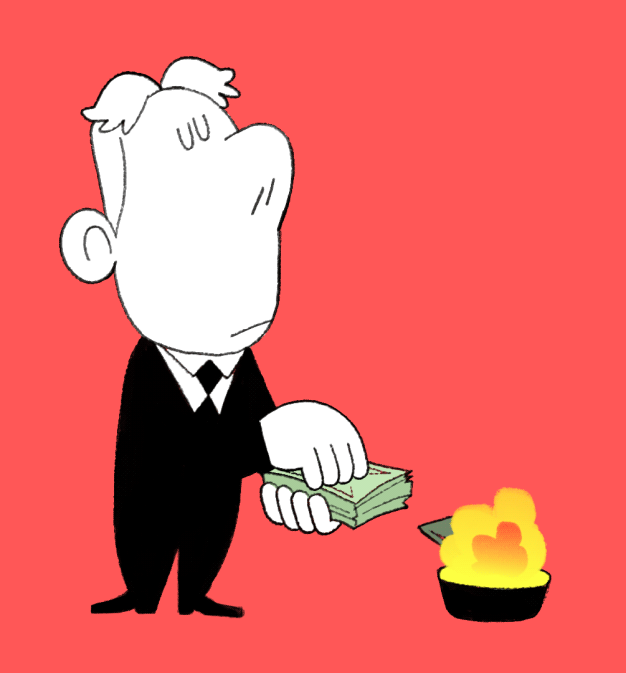
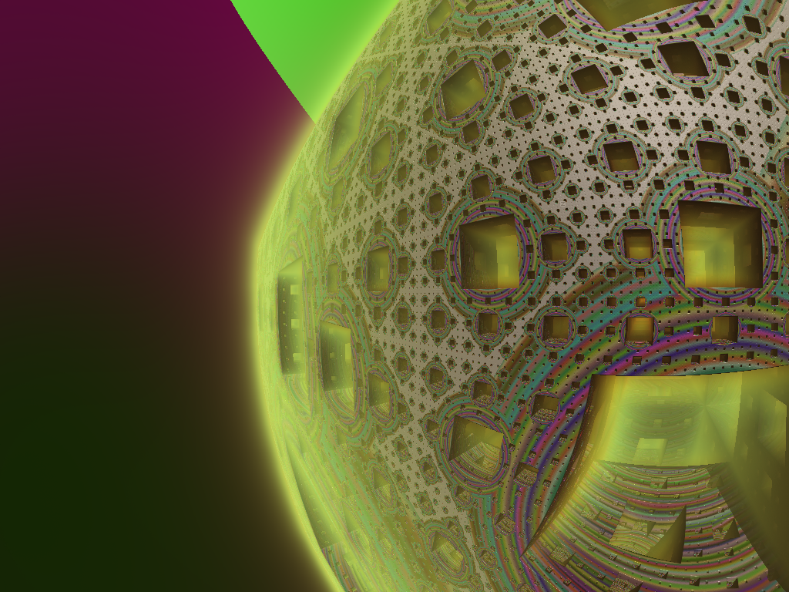

<!DOCTYPE html>
<html>
  <head>
    <title>My experiment</title>
    <script src="jatos.js"></script>
    <script src="https://unpkg.com/jspsych@7.3.3"></script>
    <script src="https://unpkg.com/@jspsych/plugin-html-keyboard-response@1.1.2"></script>
    <script src="https://unpkg.com/@jspsych/plugin-html-button-response@1.1.2"></script>
    <script src="https://unpkg.com/@jspsych/plugin-image-keyboard-response@1.1.2"></script>
    <script src="https://unpkg.com/@jspsych/plugin-html-slider-response@1.1.2"></script>
    <script src="https://unpkg.com/@jspsych/plugin-preload@1.1.2"></script>
    <script src="https://unpkg.com/@jspsych/plugin-instructions@1.1.2"></script>
    <script src="https://unpkg.com/@jspsych/plugin-survey-multi-select@1.1.2"></script>
    <script src="https://unpkg.com/@jspsych/plugin-survey-likert@1.1.2"></script>
    <script src="https://unpkg.com/@jspsych/plugin-survey-multi-choice@1.1.2"></script>
    <script src="https://unpkg.com/@jspsych/plugin-audio-button-response@1.1.2"></script>
    <script src="https://unpkg.com/@jspsych/plugin-call-function@1.1.2"></script>
    <script src="https://unpkg.com/@jspsych/plugin-survey-text@1.1.2"></script>
    <script src="https://unpkg.com/@jspsych/plugin-fullscreen@1.1.2"></script>
    <link href="https://unpkg.com/jspsych@7.3.3/css/jspsych.css" rel="stylesheet" type="text/css" />
    <script type="text/javascript" src = "https://cdnjs.cloudflare.com/ajax/libs/underscore.js/1.9.1/underscore-min.js"></script>

  <style>
  .jspsych-display-element {
      font-size: 20px;
  }
      
  img {
      padding: 50px; 
      width: 200px; 
      height: 200px;
  }

  ul {
      list-style-position: inside;
      margin: 0;
      padding: 0;
} 


h1 div {
    position: absolute;
    top: 80px;
    left: 210px
}

h2 div {
        position: absolute;
        top: 400px;
        left: 400px;
        font-size: 40px;
        background-color: yellow;
    }

h3 div {
        position: absolute;
        top: 250px;
        left: 250px;
        right: 150px;
        font-size: 40px;
        background-color: white;
    }

mark.YELLOW {
    background: #FFDB58;
}

mark.BLUE {
  background: #89CFF0;
}

  </style>
  </head>
  <body></body>
  <script>
      /* This version creates a reversal learning task with:
            1) video ratings section
                presented with 10 stimuli and asked to rate on valence, arousal, fear and disgust
                    (do this twice - first as a pre-exposure, and second to get actual ratings)
                selects a fear and disgust video for the task on the basis of these ratings
            2) reversal learning task instructions
                followed by a quiz
                Added a practice phase - with no reversal and a page after to explain
            3) reversal learning task
                CS: randomly selected from set of fractals
                US: selected using answers from the ratings section (used for probabilistic feedback)
                    all preceded by a yellow or blue square (randomised between participants) to add clarity *change in this version
                    added sounds
                reversals: can control number, and occur after a string of correct answers
                with added attention checks each round

                Has attention checks within this --> plays or shows a word every set number of trials

                do this 3 times - for three randomly ordered blocks (fear, disgust and points)
            4) return to ratings section 
      */

      /* initiliase jsPsych  and preload stimuli*/
      var jsPsych = initJsPsych({
          on_trial_start: jatos.addAbortButton,
          on_finish: function(){
            window.onbeforeunload = null;
            let trialsJson = jsPsych.data.get().json();
            jatos.submitResultData(trialsJson, jatos.startNextComponent);
          } ,
      });
      
      /*create timeline */
      var timeline = [];


      ///Preload stimuli ///
      var images = [`reversal_learning_stim/US/BLUE.png`, `reversal_learning_stim/US/YELLOW.png`,
                    'reversal_learning_stim/fractal/F000.png', 'reversal_learning_stim/fractal/F009.png', `reversal_learning_stim/fractal/F010.png`, 'reversal_learning_stim/fractal/F012.png', 'reversal_learning_stim/fractal/F015.png', 'reversal_learning_stim/fractal/F018.png', 'reversal_learning_stim/fractal/F020.png', 'reversal_learning_stim/fractal/FO14.png',
                    `reversal_learning_stim/US/disgust/0888.gif`, `reversal_learning_stim/US/disgust/1414.gif`, `reversal_learning_stim/US/disgust/1765.gif`, `reversal_learning_stim/US/disgust/1987.gif`, `reversal_learning_stim/US/disgust/2106.gif`,
                    `reversal_learning_stim/US/fear/0046.gif`, `reversal_learning_stim/US/fear/0374.gif`, `reversal_learning_stim/US/fear/0548.gif`, `reversal_learning_stim/US/fear/0877.gif`, `reversal_learning_stim/US/fear/1202.gif`, `reversal_learning_stim/US/fear/1686.gif`, 'reversal_learning_stim/US/sad.gif']
      
      var audios = [`reversal_learning_stim/US/scream.mp3`, `reversal_learning_stim/US/vomit.mp3`, `reversal_learning_stim/US/0716-2_crop.wav`, `reversal_learning_stim/US/buzzer.mp3`, `reversal_learning_stim/test_stim/apple.mp3`, `reversal_learning_stim/US/buzzer.mp3`, `reversal_learning_stim/test_stim/microwave.mp3`, `reversal_learning_stim/test_stim/river.mp3 `,
                    `reversal_learning_stim/test_stim/spoon.mp3`, `reversal_learning_stim/test_stim/tuna.mp3`]
      
      var preload = {
        type: jsPsychPreload,
        images: images,
        audio: audios,
        show_detailed_errors: true
      }
      jsPsych.run(preload)

      ///Set stimuli variables ///
      img_style=`style="width:400px; height: 400px; position: absolute; top: 100px; left: 100px" </img>`

      div = `<div style="width: 600px; height: 600px; position: relative; display: flex; justify-content: center; align-items: center;">`
      box_style=`style="width:600px; height: 600px; position: absolute; top: 0px; left: 0px" </img>`
    
      //randomly assign whether blue or yellow is safe/lose
      colour_randomisation=jsPsych.randomization.shuffle(['YELLOW', 'BLUE'])
      safe = colour_randomisation[0]
      lose = colour_randomisation[1]
      safe_box = `<div><b>Lose 10 points :(   </b></div></h1>`+`style="position: absolute; top: 200px; left: 90px`+
                ``
      money_safe_us=`<h1><div><b>Lose 0 points :)  </b></div></h1>`+`style="position: absolute; top: 200px; left: 100px`+
                    `
            <source src = "reversal_learning_stim/US/scream.mp3" type="audio/mpeg">
         </audio>`
      vomit = `<audio autoplay>
            <source src = "reversal_learning_stim/US/vomit.mp3" type="audio/mpeg">
         </audio>`
      ting = `<audio autoplay>
            <source src = "reversal_learning_stim/US/0716-2_crop.wav" type="audio/wav">
         </audio>`
      buzzer = `<audio autoplay>
            <source src = "reversal_learning_stim/US/buzzer.mp3" type="audio/mpeg">
         </audio>`

      var vid_examples = [
            {vid: `</img><audio autoplay>
            <source src = "reversal_learning_stim/US/vomit.mp3" type="audio/mpeg"></audio>`, type: 'disgust'},     
           {vid: `</img><audio autoplay>
            <source src = "reversal_learning_stim/US/vomit.mp3" type="audio/mpeg"></audio>`, type: 'disgust'}, 
            {vid: `</img><audio autoplay>
            <source src = "reversal_learning_stim/US/vomit.mp3" type="audio/mpeg"></audio>`, type: 'disgust'}, 
            {vid: `</img><audio autoplay>
            <source src = "reversal_learning_stim/US/vomit.mp3" type="audio/mpeg"></audio>`, type: 'disgust'},  
            {vid: `</img><audio autoplay>
            <source src = "reversal_learning_stim/US/vomit.mp3" type="audio/mpeg"></audio>`, type: 'disgust'},
            {vid: `</img><audio autoplay>
            <source src = "reversal_learning_stim/US/scream.mp3" type="audio/mpeg"></audio>`, type: 'fear'}, 
            {vid: `</img><audio autoplay>
            <source src = "reversal_learning_stim/US/scream.mp3" type="audio/mpeg"></audio>`, type: 'fear'}, 
            {vid: `</img><audio autoplay>
            <source src = "reversal_learning_stim/US/scream.mp3" type="audio/mpeg"></audio>`, type: 'fear'}, 
            {vid: `</img><audio autoplay>
            <source src = "reversal_learning_stim/US/scream.mp3" type="audio/mpeg"></audio>`, type: 'fear'}, 
            {vid: `</img><audio autoplay>
            <source src = "reversal_learning_stim/US/scream.mp3" type="audio/mpeg"></audio>`, type: 'fear'}, 
        ]
     sad_eg=`</img>`

     var stimuli = [
        'reversal_learning_stim/fractal/F000.png',
        'reversal_learning_stim/fractal/F009.png',
        `reversal_learning_stim/fractal/F010.png`,
        'reversal_learning_stim/fractal/F012.png',
        'reversal_learning_stim/fractal/F014.png',
        'reversal_learning_stim/fractal/F015.png',
        'reversal_learning_stim/fractal/F018.png',
        'reversal_learning_stim/fractal/F020.png',
      ];
      rand_stimuli = jsPsych.randomization.shuffle(stimuli);

      
      var written_words=["BANANA", "BOWL", "MOUNTAIN"]
      var spoken_words=["reversal_learning_stim/test_stim/apple.mp3", "reversal_learning_stim/test_stim/spoon.mp3", "reversal_learning_stim/test_stim/river.mp3"]


//// SECTION 1: WELCOME AND VIDEO RATINGS /////

      var full_screen = {
        type: jsPsychFullscreen,
        fullscreen_mode: true,
        message: `<p><b>Clicking continue will enter the experiment into fullscreen mode.</b></p>`
      }
      timeline.push(full_screen)

      /*define welcome message trial */
      var welcome = {
          type: jsPsychHtmlButtonResponse,
          stimulus: `
          <p style="font-size:2em;color:#9ec1cf""><b>Welcome!</b><p>
            <p>The experiment will be divided into four parts.</p>
            <p> Firstly, you will have to watch and rate some short video clips (<b>part 1</b>), then you will complete a learning task (<b>part 2</b>).</p>
            <p> Next, you will watch and rate the video clips again (<b>part 3</b>)</p>
            <p> Then you will complete some questionnaires regarding your physical and mental health before doing a brief working memory task (<b>part 4</b>).</p>
            <br><p><b> What you have to do in each section will be explained before you start. </b></p>
            `,
          choices: ["Continue"],
          on_finish: function(data){
            data.trial_var="welcome"
          }
      };
    timeline.push(welcome);

    /* define welcome message for video rating task */
    var welcome_vids = {
        type: jsPsychHtmlButtonResponse,
        stimulus: `<p><b>Part 1: Emotion Videos</b></p>
              <p>On each trial, you will be presented with a short video clip.</p>
              <p> You will then have to answer questions about how the video made you feel. </p>`,
        choices: ["Continue"],
        on_finish: function(data){
            data.trial_var="welcome_vids"}
      }
    timeline.push(welcome_vids)

    /* define welcome instruction page for video rating task */
    var instr_vids = {
        type: jsPsychHtmlButtonResponse,
        stimulus: `<p><b>Part 1: Emotion Videos</b></p>
              <p>After watching each video clip, you will be asked:</p>
              <p> <b>1.</b> How <b>unpleasant</b> you found the video (on a scale from not unpleasant - or neutral - to very unpleasant). </p>
              <p> <b>2.</b> How <b>active/passive</b> you found the video (on a scale from very passive to very active). </p>
              <p> <b>3.</b> How <b>disgusting</b> you found the video (on a scale from not disgusting to very disgusting). </p>
              <p> <b>4.</b> How <b>frightening</b> you found the video (on a scale from not frightening to very frightening).</p>`
              ,
        choices: ["Continue"],
        on_finish: function(data){
            data.trial_var="instr_vids"}
      }
    timeline.push(instr_vids)

    ///remind participants to wear headphones
    var headphone_reminder = {
        type: jsPsychHtmlButtonResponse,
        stimulus: `<p style="color:Tomato; font-size:24px"><b>REMINDER: Please check your headphones and sound are still working before starting the task</b></p>
                    <audio controls> <source src = "reversal_learning_stim/test_stim/testing.mp3" type="audio/mpeg"> </audio>`,
        choices: ['Start task'],
        on_finish: function(data){
            data.trial_var="headphone_reminder"}
      }
    timeline.push(headphone_reminder)
     

    /*DEFINE VIDEO RATINGS TASK */

    //presenting stimulus trial
     var present_stim = {
        type: jsPsychHtmlKeyboardResponse,
        stimulus: jsPsych.timelineVariable('vid'),
        trial_duration: 3000,
        choices: ["NO_KEYS"], 
        data: {
              type: jsPsych.timelineVariable('type'),
              trial_var: "present_stim",
     }
    }

      //rating stimulus trial
      var valence_scale = [`<p><b>1</b></p><p>Not unpleasant</p>`,
                            `<p><b> 2 </b></p>`,
                            `<p><b>3</b></p>`, 
                            `<p><b>4</b></p>`, 
                            `<p><b>5</b></p>`,
                            `<p><b>6</b></p>`,
                            `<p><b>7</b></p>`,
                            `<p><b>8</b></p>`,
                            `<p><b>9</b></p><p>Very unpleasant</p>`]
      var arousal_scale = [`<p><b>1</b></p><p>Very passive</p>`,
                            `<p><b>2</b></p>`,
                            `<p><b>3</b></p>`, 
                            `<p><b>4</b></p>`, 
                            `<p><b>5</b></p>`,
                            `<p><b>6</b></p>`,
                            `<p><b>7</b></p>`,
                            `<p><b>8</b></p>`,
                            `<p><b>9</b></p><p>Very active</p>`]
      var disgust_scale = [`<p><b>1</b></p><p>Not disgusting</p>`,
                            `<p><b>2</b></p>`,
                            `<p><b>3</b></p>`, 
                            `<p><b>4</b></p>`, 
                            `<p><b>5</b></p>`,
                            `<p><b>6</b></p>`,
                            `<p><b>7</b></p>`,
                            `<p><b>8</b></p>`,
                            `<p><b>9</b></p><p>Very disgusting</p>`]
      var fear_scale = [`<p><b>1</b></p><p>Not frightening</p>`,
                            `<p><b>2</b></p>`,
                            `<p><b>3</b></p>`, 
                            `<p><b>4</b></p>`, 
                            `<p><b>5</b></p>`,
                            `<p><b>6</b></p>`,
                            `<p><b>7</b></p>`,
                            `<p><b>8</b></p>`,
                            `<p><b>9</b></p><p>Very frightening</p>`]


      var rate_stim = {
            type: jsPsychSurveyLikert,
            questions: [
                {prompt: `<p>How <b>unpleasant</b> did you find this video?</p>`,
                labels: valence_scale, required: true},
                {prompt: `<p>How <b>active/passive</b> did you find this video?</p>`,
                labels: arousal_scale, required: true},
                {prompt: `<p>How <b>disgusting</b> did you find this video?</p>`,
                labels: disgust_scale, required: true},
                {prompt: `<p>How <b>frightening</b> did you find this video?</p>`,
                labels: fear_scale, required: true} 
            ],
            scale_width: 750,
            choices: ["Continue"],
            on_finish: function(data){
              data.type = jsPsych.data.get().last(2).values()[0].type
              data.stimulus = jsPsych.data.get().last(2).values()[0].stimulus
              data.trial_var="rate_stim"
            }
        }

        var choose_stim_procedure = {
            timeline: [present_stim, rate_stim],
            timeline_variables: vid_examples,
            sample: {
                  type: 'without-replacement',
                  //size: 2,
                  size: 10,
                  },
            randomize_order: true}

    /* creates a trial to move on from the ranking trials - but also selects the stimuli being used going forwards */
    var choose_stim_thankyou_trial = {
        type: jsPsychHtmlButtonResponse,
        stimulus: `<p>Thank you very much!</p>
            <p> We will now go onto part 2 (the behavioural task).</p>`,
        choices: ["Continue"],
        on_finish: function(data){ //function to select stimuli going forward
            stim_ratings = jsPsych.data.get().filter({trial_var: 'rate_stim'})
            disgust = stim_ratings.filter({type: 'disgust'}).values()
            disgust_valence = [disgust[0].response.Q0, disgust[1].response.Q0,  disgust[2].response.Q0,  disgust[3].response.Q0, disgust[4].response.Q0]
            disgust_arousal = [disgust[0].response.Q1, disgust[1].response.Q1,  disgust[2].response.Q1,  disgust[3].response.Q1, disgust[4].response.Q1]
            disgust_disgusting = [disgust[0].response.Q2, disgust[1].response.Q2,  disgust[2].response.Q2,  disgust[3].response.Q2, disgust[4].response.Q2]
            disgust_frightening = [disgust[0].response.Q3, disgust[1].response.Q3,  disgust[2].response.Q3,  disgust[3].response.Q3, disgust[4].response.Q3]

            fear = stim_ratings.filter({type: 'fear'}).values()
            fear_valence = [fear[0].response.Q0, fear[1].response.Q0,  fear[2].response.Q0,  fear[3].response.Q0, fear[4].response.Q0]
            fear_arousal = [fear[0].response.Q1, fear[1].response.Q1,  fear[2].response.Q1,  fear[3].response.Q1, fear[4].response.Q1]
            fear_disgusting = [fear[0].response.Q2, fear[1].response.Q2,  fear[2].response.Q2,  fear[3].response.Q2, fear[4].response.Q2]
            fear_frightening = [fear[0].response.Q3, fear[1].response.Q3,  fear[2].response.Q3,  fear[3].response.Q3, fear[4].response.Q3]

            for (let i=0; i< disgust_valence.length; i++){ //converting scales to 1-9 rather than 0-8 (which is how they are stored automatically)
                disgust_valence[i] += 1
                disgust_arousal[i] +=1
                disgust_disgusting[i] +=1
                disgust_frightening[i] +=1
                fear_valence[i] +=1
                fear_arousal[i] +=1
                fear_disgusting[i] +=1
                fear_frightening[i] +=1}

            res_1=[]
            res_2=[]
            disgust_stimulus=[]
            fear_stimulus=[]
            best_score=0
            for (var d=0; d<5; d++){
                for (var f=0; f<5; f++){
                  val_diff= Math.abs(disgust_valence[d]-fear_valence[f]) 
                  arousal_diff =  Math.abs(disgust_arousal[d]-fear_arousal[f])
                  va_diff_score = ((9-val_diff)+(9-arousal_diff))//subtract from 9 makes it so bigger is better
                  
                  val_total=Math.abs(disgust_valence[d])+Math.abs(fear_valence[f])
                  arousal_total=Math.abs(disgust_arousal[d])+Math.abs(fear_arousal[f])
                  total_score=(val_total+arousal_total)/2 // divide by two to make evenly weighted with others

                  fear_diff= fear_frightening[f]-disgust_frightening[d]
                  disgust_diff=disgust_disgusting[d]-fear_disgusting[f]
                  fd_diff_score=(fear_diff+disgust_diff)
                  
                  stim_score=va_diff_score+total_score+fd_diff_score
                  
                  if(stim_score>best_score){
                        res_1 = d
                        res_2 = f
                        best_score=stim_score
                    } else {
                        best_score=best_score
                        res_1 = res_1
                        res_2 = res_2
                    }
            }
        }
        disgust_stimulus = disgust[res_1].stimulus.slice(0, 53) 
        fear_stimulus = fear[res_2].stimulus.slice(0, 50)  

        //save outputs 
        data.disgust_stimulus=disgust_stimulus
        data.fear_stimulus=fear_stimulus
        data.disgust_ratings=[disgust_valence[res_1], disgust_arousal[res_1], disgust_disgusting[res_1], disgust_frightening[res_1]] 
        data.fear_ratings=[fear_valence[res_2], fear_arousal[res_2], fear_disgusting[res_2], fear_frightening[res_2]] 
        data.trial_var="choose_stim_thankyou_trial"
        correct_count = 0
        n_trial = 0
        trial_till_correct=0
        data.correct_count=correct_count
        data.n_trial=n_trial
        data.trial_till_correct=trial_till_correct
    }
    }
     timeline.push(choose_stim_procedure);
     timeline.push(choose_stim_thankyou_trial);


/////PART 2: REVERSAL LEARNING INSTRUCTIONS AND QUIZ

       /* define instructions trials*/
       var reversal_instructions = {
          type: jsPsychInstructions,
          pages:  //modelled off of instructions described in Budhani et al 2006
              [`<p><b>Part 2: Learning task </b></p>
              <p>Please navigate through the following instructions pages, ensuring you have understood the task</p>`,
              `<p>In each trial, pairs of images will be presented on the screen</p>
              <p>You will have to choose between them by pressing the 'f' and the 'j' key</p>` + `<br>` +
              ` 
              `, // example images that won't be used in the task
              `<p> e.g., pressing the 'f' key will select the left hand image <p>` + `<br>` +
              ` 
              `,
              `<p>And pressing the 'j' key will select the right hand image <p>` + `<br>` +
                `
                `,
              `<p>The computer will then give you feedback on the basis of this choice.</p>`,
              `<p>If you get it wrong you will get a negative outcome, such as ...<p>
                <p><b>Lose 10 points :(   </b></p>
                
                <p> Or you might have to watch a <b>negative video</b> (such as the clips you've just seen): </p>
                ${sad_eg} `, //use a sad video so that it won't be the videos used earlier
              `<p><b>If you get it right you will not incur any negative consequences:</b></p>
                <p> i.e., you won't lose points or you won't have to watch a negative video </p>
                <p> Instead you will watch a <b>non-negative video.</b></p>
                `,
                `<p> To help you distinguish between the trials with negative consequences and without negative consequences </p>
                <p> negative outcomes will be on <mark class = "`+lose+`">`+lose+`</mark> backgrounds and non-negative outcomes will be on <mark class = "`+safe+`">`+safe+`</mark> backgrounds. </p>`,
              
                `<p>Your aim is to choose the image you think will <b>avoid the negative outcomes</b>: </p>
                <ul>
                  <li>each of the images will sometimes be safe and will sometimes give you a negative outcome </li>
                  <li>but one of the images will tend to be safe more often than the other one </li>
                </ul>
                <p> This means that you have to find out which images is usually correct, and <b>choose that image every time. </b></p>`,
                `<p> But watch out! </p>
                <p>The task <b>may change</b> (without telling you) so that the <b>other image is usually correct. </b></p>
                <p>If you think this has happened, you should <b>change your response</b> to choose that one every time. <p>`,
                `<p>You will have to do this task <b>3 different times</b>, each time will have different images and types of feedback.</p>`,
                `<p>Additionally, throughout the task you may <b>see or hear random words.</b></p>
                <p>Please do your best to remember these words (but please do so <b>without writing them down!</b>), because <b>you will be tested</b> on them at the end of the task block.</p>
                <p>Answering these questions correctly will make you <b>eligible for a bonus!</b></p>`,
                `<p>At some points during the task you will be told that you can take a quick break.</p>
                <p><b>It is very important that you do not take any additional breaks during other parts of the task.</b></p>
                <p>Taking additional breaks will make you inelligible for the bonus payment</p>`,
                `<p>Before we start the task, you will be asked to <b>complete a quick quiz</b> to check you have understood.</p>
                    <p>If you are confident you have understood, press 'Next'</p>
                    <p>Alternatively, click 'Previous' to re-read the instructions.</p>`
          ], 
          show_clickable_nav: true,
          on_finish: function(data){
            correct_count = 0
            n_trial = 0
            trial_till_correct=0
            data.correct_count=correct_count
            data.n_trial=n_trial
            data.trial_till_correct=trial_till_correct
            data.trial_var="reversal_instructions"}
      };

      /* Quiz to check they read the instructions */
      var instructions_quiz = {
          type: jsPsychSurveyMultiSelect,
          questions: [
              {
                  prompt: `<p> Select the items which are <b>true</b>.</p>`,
                  options: [
                      "The 'j' key choses the left picture and the 'f' key choses the right picture.", //F
                      "Words you see and hear during the task are irrelevant and you don't have to pay attention/remember them", //F
                      "The aim is to avoid negative feedback, regardless of what type of negative feedback it is (points, videos etc.)", //T
                      "Choosing the correct image will make it more likely that you avoid the negative outcome, but will not always protect you from the negative outcome", //T
                      "Once you have learnt which the correct image is, it will carry on being the correct image for the rest of the task", //F
                      "You will have to complete the task a total of 3 times and each time will have different images etc.", //T
                      "You will be told to take quick breaks on certain trials. Taking breaks outside of these trials will risk losing your bonus." //T
                  ],
                  required: true,
              }
          ],
          on_finish: function(data){
            data.trial_var="instructions_quiz"}
            }
      
      /* work out if they were correct --> and give feedback */
      n_incorrect=0
      var instructions_feedback = {
            type: jsPsychHtmlButtonResponse,
            stimulus: function(data){
                answer=jsPsych.data.get().last(1).values()[0].response.Q0
                ideal_answer=[
                    "The aim is to avoid negative feedback, regardless of what type of negative feedback it is (points, videos etc.)",
                    "Choosing the correct image will make it more likely that you avoid the negative outcome, but will not always protect you from the negative outcome", 
                    "You will have to complete the task a total of 3 times and each time will have different images etc.",
                    "You will be told to take quick breaks on certain trials. Taking breaks outside of these trials will risk losing your bonus." ]
                trick_q=[
                    "The 'j' key choses the left picture and the 'f' key choses the right picture.",
                    "The aim is to avoid negative feedback, regardless of what type of negative feedback it is (points, videos etc.)",
                    "Choosing the correct image will make it more likely that you avoid the negative outcome, but will not always protect you from the negative outcome", 
                    "You will have to complete the task a total of 3 times and each time will have different images etc.",
                    "You will be told to take quick breaks on certain trials. Taking breaks outside of these trials will risk losing your bonus." 
                ]
                if(_.isEqual(answer, ideal_answer)){
                    n_incorrect=n_incorrect
                    return `<p><b>Well done! You've understood the task correctly</b></p>
                              <p> You will now complete a brief practice task to consolidate this knowledge. </p>
                            <p>Please click 'Continue' to begin the practice task. </p>`
                } else if (_.isEqual(answer, trick_q)){ //gives a hint if the only question they got wrong was the 'trick' question about 'j' and 'f' keys
                  n_incorrect=n_incorrect+1
                  return `<p>Incorrect. Don't worry! You can re-read the instructions and try again.</p>
                          <p> <b> HINT: </b> Check whether the 'j' key or the 'f' key is on the right hand side! (it's a trick question) </p>`
                }
                 else{ //answer is incorrect
                    n_incorrect=n_incorrect+1
                    return "Incorrect. Don't worry! You can re-read the instructions and try again."
                }
            },
            choices: ["Continue"],
            on_finish: function(data){
                data.n_incorrect=n_incorrect
                data.trial_var="instructions_feedback"
            }
      }
 
      // Loop through instructions until they get it correct
      var instructions_loop = {
          timeline: [reversal_instructions, instructions_quiz, instructions_feedback],
          loop_function: function(data){
            correct_response=`<p><b>Well done! You've understood the task correctly</b></p>
                              <p> You will now complete a brief practice task to consolidate this knowledge. </p>
                            <p>Please click 'Continue' to begin the practice task. </p>`
            actual_response=jsPsych.data.get().last(1).values()[0].stimulus
             if (correct_response==actual_response){
                      return false;
                } else {
                      return true;
                    }
                },
      }
    timeline.push(instructions_loop)

    /* Define the PRACTICE TASK */

    //timeline variables --> using stim not used for main task
      var practice_timeline_variables = [
          {practice_stim: 
            `</img>
            </img>`, 
            practice_target: "f"},
           {practice_stim: 
            `</img>
            </img>`, 
            practice_target: "j"},
          ];

    // define response trial
    var practice_response_trial = {
          type: jsPsychHtmlKeyboardResponse,
          stimulus: jsPsych.timelineVariable('practice_stim'),
          choices: ['f','j'],
          //trial_duration: 1500,
          data: {
              practice_target: jsPsych.timelineVariable('practice_target'),
          },
          on_finish: function(data){
              if(jsPsych.pluginAPI.compareKeys(data.response, data.practice_target)){
                  data.correct = true;
              } else {
                  data.correct = false;
              }
              data.trial_var="practice_response"
              data.task="practice_task"
          }
      };

      // define 'give answer' trial --> //Shows the fractal they just selected
      var practice_give_answer = { 
          type: jsPsychHtmlKeyboardResponse,
          stimulus: function(data){
              response = jsPsych.data.get().last(1).values()[0].response
              stimulus = jsPsych.data.get().last(1).values()[0].stimulus
              white='reversal_learning_stim/fractal/WHITE.png'
              empty=``
              if(response=='f'){
                  //display what was on the left
                  return stimulus.slice(0,57).concat(empty)
              }else{
                  //display what was on the right
                  return empty.concat(stimulus.slice(68,127))
              }
          },
          choices: ["NO_KEYS"],
          trial_duration: 350,
          //trial_duration: 10000,
          on_finish: function(data){
            data.trial_var="practice_answer"
            data.task="practice_task"}
          }
          
    // define two types of feedback for this task --> no videos, just text saying 'you got it right' or 'your got it wrong'            
    safe_feedback= safe_box+`<h3><div class = "overlay"><p>`+safe+` means you got it right!</p></div></h3>`
    lose_feedback=lose_box+`<h3><div class = "overlay"><p>`+lose+` means you got it wrong!</p></div></h3>`
    
    // define first feedback trial - gives yellow or blue square
    var practice_feedback_1 = {
      type: jsPsychHtmlKeyboardResponse,
      stimulus: function(){
        var last_trial_correct = jsPsych.data.get().last(2).values()[0].correct;
              if(last_trial_correct){
                  target_feedback = 0;
                  var prob_feedback = [0, 0, 0, 0, 0, 0, 0, 0, 1, 1];
                  actual_feedback = prob_feedback[(Math.random()*prob_feedback.length | 0)];
                  true_feedback = prob_feedback[(Math.random()*prob_feedback.length | 0)]; //chooses a number from prob_feedback randomly
                  if(true_feedback == 0){actual_feedback=safe_box}
                  else{actual_feedback = lose_box}
                  return div+actual_feedback;
              } else {
                target_feedback = 1; //get negative feedback when you get it wrong
                  var prob_feedback = [1, 1, 1, 1, 1, 1, 1, 1, 0, 0];
                  true_feedback = prob_feedback[(Math.random()*prob_feedback.length | 0)];
                  if(true_feedback==0){actual_feedback=safe_box}
                  else{actual_feedback = lose_box}
                  return div+actual_feedback;
              } 
          },
          choices: ["NO_KEYS"],
          trial_duration: 250,
          on_finish: function(data){
            data.trial_var="practice_feedback_1"
            data.task="practice_task"
            data.feedback=actual_feedback
            if(true_feedback==target_feedback){
                      data.feedback_congruent = true;
               } else {
                      data.feedback_congruent = false;
          }
      }
    }
    
    //defines 2nd feedback trial --> gives text over the top (will be a video in actual task)
    var practice_feedback_2 = {
          type: jsPsychHtmlKeyboardResponse,
          stimulus: function(){
            square_colour = jsPsych.data.get().last(1).values()[0].stimulus
              if(square_colour.includes(safe)){actual_feedback=safe_feedback
                  return div+actual_feedback;
              } else {
                  actual_feedback=lose_feedback
                  return div+actual_feedback;
              } 
          },
          choices: ["NO_KEYS"],
          trial_duration: 2000,
          on_finish: function(data){
            data.trial_var="practice"
            data.feedback=actual_feedback
            if(true_feedback==target_feedback){
                      data.feedback_congruent = true;
               } else {
                      data.feedback_congruent = false;
          }
          data.trial_var="practice_feedback_2"
          data.task="practice_task"
        }
      }

      //run practice task (with 4 types of trial, random sampling et.c)
      n_trials=10;
      var practice_test_procedure = {
          timeline: [practice_response_trial, practice_give_answer, practice_feedback_1, practice_feedback_2], 
          timeline_variables: practice_timeline_variables,
          sample: {
            type: 'with-replacement',
            size: n_trials, 
            },
          randomize_order: true
          }
     timeline.push(practice_test_procedure);

     //tell them what the right answer was after the practice trial
      var practice_feedback = {
        type: jsPsychHtmlButtonResponse,
        stimulus: `<p><b> You may have figured out that it is better to select this image: </b></p>
                    <p>(although even the better image sometimes gives you bad feedback)</p>`+
                    `</img>`+
                    `<p>However in the main task, which image is better <b>may switch without warning! </b></p>
                    <p> You should switch your responses when you think this has happened. </p>`,
        choices: ['Continue to main task'],
        on_finish: function(data){
          data.trial_var="practice_task_feedback"
        }
      }
    timeline.push(practice_feedback)

    timeline.push(headphone_reminder)


//// PART 3: REVERSAL LEARNING TASK /////


  //firstly need to do some set-up --> prior to then running the task in a series of for loops
      // will have a for loop for all the reversals and for the three blocks
      
      /* Define the experiment variables */
      n = Array(100).fill([1, 0]).flat() //creates an array that rotates between 0 and 1 to allow the reversals
      n_reversals = 8 // defines number of contingencies (number of reversals is actually this number -1)
      max_trial=200  //maximum number of trials in each block (fear, disgust and point block)
      max_correct=5 //determines after how many consecutive correct answers a reversal occurs
      attention_trial=30 //how often there will be an attention check during the task
      attention1=[attention_trial, 3*attention_trial, 5*attention_trial, 7*attention_trial, 9*attention_trial, 11*attention_trial, 13*attention_trial] //array for all visual/audio attention trials
      attention2=[2*attention_trial, 4*attention_trial, 6*attention_trial, 8*attention_trial, 10*attention_trial, 12*attention_trial, 14*attention_trial] //array for all visual/audio attention trials
      

      /* define the three types of feedback and put in a random order */
      //var feedback_type = ["Points", "Disgust", "Fear"],
      var feedback_type = ["Points"]
      feedback_type = jsPsych.randomization.shuffle(feedback_type);  
      disgust_stimulus = []
      fear_stimulus = []

      // define 'give answer' trial ==>  //Shows the fractal they just selected
      var give_answer = {
          type: jsPsychHtmlKeyboardResponse,
          stimulus: function(data){
              response = jsPsych.data.get().last(1).values()[0].response
              stimulus = jsPsych.data.get().last(1).values()[0].stimulus
              white='reversal_learning_stim/fractal/WHITE.png'
              empty=``
              if(response=='f'){
                  //display what was on the left
                  return stimulus.slice(0,57).concat(empty)
              }else{
                  //display what was on the right
                  return empty.concat(stimulus.slice(68,127))
              }
          },
          choices: ["NO_KEYS"],
          trial_duration: 350,
          on_finish: function(data){
                if (n_trial > max_trial){
                    data.timed_out="TIMED OUT"
                } else {
                    data.timed_out="false" }
                data.trial_var = "give_answer"
                data.n_trial= n_trial
                }
                }

     /* create the feedback trials */

      //define feedback 1 --> gives a yellow or blue box
      var feedback_1 = { 
        type: jsPsychHtmlKeyboardResponse,
        stimulus: function(){
          var last_trial_correct = jsPsych.data.get().last(2).values()[0].correct; //last 2 because of give_answer trial
          if(last_trial_correct){
                  target_feedback = 0; //no feedback when get it right
                  //creates probabilistic contingences 
                  var prob_feedback = [0, 0, 0, 0, 0, 0, 0, 0, 1, 1];
                  true_feedback = prob_feedback[(Math.random()*prob_feedback.length | 0)]; //chooses a number from prob_feedback randomly
                  if(true_feedback ==0){actual_feedback=safe_box}
                  else{actual_feedback=lose_box}
                  return div+actual_feedback;
        }else { //repeat as above for if you didn't get the trial right
                  target_feedback = 1; //get negative feedback when you get it wrong
                  var prob_feedback = [1, 1, 1, 1, 1, 1, 1, 1, 0, 0];
                  true_feedback = prob_feedback[(Math.random()*prob_feedback.length | 0)];
                  if(true_feedback==0){actual_feedback=safe_box}
                  else{actual_feedback=lose_box}
                 // return `<p>${actual_feedback}</p>`;
                  return div+actual_feedback;
      }
    }, 
    choices: ["NO_KEYS"],
    trial_duration: 250,

    on_finish: function(data){
        data.trial_var="feedback_trial_1";
        data.n_trial=n_trial
        data.feedback=actual_feedback; //store what the feedback was
                if(true_feedback==target_feedback){ //store whether feedback was congruent
                      data.feedback_congruent = true;
               } else {
                      data.feedback_congruent = false;
          }
              if (n_trial > max_trial){
                  data.timed_out="TIMED OUT"
              } else {
                  data.timed_out="false"
              }
        } 
      }

      // define feedback 2 --> gives disgust/fear/points outcome
      var feedback_2 = { 
          type: jsPsychHtmlKeyboardResponse,
          stimulus: function(data){
                square_colour = jsPsych.data.get().last(1).values()[0].stimulus //takes colour of box from last trial to determine which type of feedback it will be
                var i = jsPsych.data.get().last(2).values()[0].block_no; //gives info about which block on (1, 2,3)
                Us_type=feedback_type[i] //extract block type (and thus US type) using the block number and feedback_type array

                //sometimes feedback won't be the US but will be an audio or visual check - so need to define these trials as well
                visual_check=`<h2><div class = "overlay"><p>${written_words[i]}</p></div></h2>`
                audio_check=`<audio autoplay> <source src = ${spoken_words[i]} type="audio/mpeg"> </audio>`

                //extract what the fear and disgust stimuli are from the stimulus selection trial at the end of the video ratings
                disgust_stimulus=jsPsych.data.get().filter({trial_var: "choose_stim_thankyou_trial"}).values()[0].disgust_stimulus+img_style
                fear_stimulus=jsPsych.data.get().filter({trial_var: "choose_stim_thankyou_trial"}).values()[0].fear_stimulus+img_style

              //now use a series of if statements for all the different types of trial
                    // positive or negative feedback
                    // points, fear or disgust
                    // visual, audio attention or regular trial
                if(square_colour.includes(safe)){ 
                  if(visual_attention.includes(n_trial)){
                    {Us=safe_us+ting+`${visual_check}`
                      attention_trial="visual_attention"}
                    } else if(audio_attention.includes(n_trial)){
                    {Us=safe_us+audio_check
                    attention_trial="audio_attention"}
                    } else {Us=safe_us+ting
                    attention_trial="No"}
                  combined_stim = `${div}`+`${safe_box}`+`${Us}`+`</div>` 
                  return combined_stim
                } else if(square_colour.includes(lose)){ //negative feedback
                  //select aversive stimulus according to the type of block and put on top of the box
                  if(Us_type=='Points'){ //points
                    if(visual_attention.includes(n_trial)){
                    {Us=points_us+buzzer+`${visual_check}`
                      attention_trial="visual_attention"}
                    } else if(audio_attention.includes(n_trial)){
                    {Us=points_us+audio_check
                    attention_trial="audio_attention"}
                    } else {Us=points_us+buzzer
                    attention_trial="No"}}
                  else if(Us_type=='Disgust'){ //disgust
                    if(visual_attention.includes(n_trial)){
                    {Us=disgust_stimulus+vomit+`${visual_check}`
                    attention_trial="visual_attention"}
                  } else if(audio_attention.includes(n_trial)){
                    {Us=disgust_stimulus+audio_check
                    attention_trial="audio_attention"}
                    } else {Us = disgust_stimulus+vomit
                    attention_trial="No"}}
                  else if(Us_type=='Fear'){ //fear
                    if(visual_attention.includes(n_trial)){
                    {Us=fear_stimulus+scream+`${visual_check}`
                    attention_trial="visual_attention"}
                  } else if(audio_attention.includes(n_trial)){
                    {Us=fear_stimulus+audio_check
                    attention_trial="audio_attention"}
                    } else {Us = fear_stimulus+scream
                    attention_trial="No"}}
                 
                  else{Us="ERROR" //gives an error if something has gone wrong with these if statements
                      attention_trial="error"}

                  combined_stim = `${div}`+`${lose_box}`+`${Us}`+`</div>` 
                  return combined_stim
                } },
          choices: ["NO_KEYS"],
          trial_duration: 2000,

          on_finish: function(data){
              data.trial_var="feedback_trial_2";
              data.n_trial=n_trial
              data.attention_trial=attention_trial //store if it was an attention trial or not
        } 
      }
      
    //  Define attention check test trial --> to run at the begining of each block except the first (asking about the block previous)
      var attention_check = {
          type: jsPsychSurveyMultiSelect,
          questions: [{
            prompt: "Which of the following words did you see or hear during this set of trials? (select 2)",
            options: ["River", "Apple", "Oven", "Bowl", "Trousers", "Spoon", "Lamp", "Banana", "Mountain", "T-shirt"],
            required: true,
            horizontal: false, 
            },
          ],
          on_finish: function(data){
            data.trial_var="attention_check"
          }
        }

    //define break trial --> to run at the begining of each block except the first
      var break_trial = {
           type: jsPsychHtmlButtonResponse,
           stimulus: `
           <p>Take a break!</p>
           <p>After your break, we you will complete the same task again (although some parts may look different)</p>`,
           choices: ['Continue'],
           on_finish: function(data){
              correct_count = 0
              n_trial = 0
              trial_till_correct=0
              data.correct_count=correct_count
              data.n_trial=n_trial
              data.trial_till_correct=trial_till_correct
              data.trial_var="break_trial"
              }
            }
      
      var points_rate_stim = {
            type: jsPsychSurveyLikert,
            preamble: `<p>During this block incorrect responses were punished by losing points. <b>Please now rate how this punishing feedback made you feel.</b></p>`, 
            questions: [
                {prompt: `<p>How <b>unpleasant</b> did you find losing points on the task?</p>`,
                labels: valence_scale, required: true},
                {prompt: `<p>How <b>active/passive</b> did you feel losing points on the task?</p>`,
                labels: arousal_scale, required: true},
                {prompt: `<p>How <b>disgusting</b> did you find losing points on the task?</p>`,
                labels: disgust_scale, required: true},
                {prompt: `<p>How <b>frightening</b> did you find losing points on the task?</p>`,
                labels: fear_scale, required: true} 
            ],
            scale_width: 750,
            choices: ["Continue"],
            on_finish: function(data){
              data.type = jsPsych.data.get().last(2).values()[0].type
              data.stimulus = jsPsych.data.get().last(2).values()[0].stimulus
              data.trial_var="points_rate_stim"
            }
        }
  
  
 //RUN THE EXPERIMENT IN A SERIES OF FOR LOOPS
  for (var j=0; j<3; j++) { // loop through the three types of feedback (creates three trial blocks)
    index = j; //defines what loop/block number we're on
    //randomise whether visual or audio attention is first
    attention_shuffle=jsPsych.randomization.shuffle([attention1, attention2])
    visual_attention=attention_shuffle[1] 
    audio_attention=attention_shuffle[0]
    

    //attention check and break trials --> run at the beginning of each block, unless its the first
        if (j==0){} //don't display attention check before the first task
        else if (feedback_type[j-1]=="Points"){
                timeline.push(points_rate_stim)
                timeline.push(attention_check);
                timeline.push(break_trial);}
        else {timeline.push(attention_check);
              timeline.push(break_trial);}

        /*select fractals for each block */
            //also define what the correct stimulus and correct response is for the two reversals (timeline variables)
       var timeline_variables_A = [ 
          {stimulus:
            `
              `,
            target_response: "f", contingency: "A", correct_stim: `${rand_stimuli[(index)]}`},
           {stimulus:
            `
            `,
            target_response: "j", contingency: "A", correct_stim: `${rand_stimuli[(index)]}`},
          ];

      var timeline_variables_B = [ 
          {stimulus:
            `
            `,
            target_response: "j", contingency: "B", correct_stim: `${rand_stimuli[(index*2)+3]}`},
           {stimulus:
            `
            `,
            target_response: "f", contingency: "B", correct_stim: `${rand_stimuli[(index*2)+3]}`},
          ];
          

          /* define response trial --> using these timeline variables  */
          var response_trial = {
              type: jsPsychHtmlKeyboardResponse,
              stimulus: jsPsych.timelineVariable('stimulus'),
              choices: ['f','j'],
              data: { //store out target response, correct stim, and which contingency it is --> helps with data preprocessing
                  target_response: jsPsych.timelineVariable('target_response'),
                  correct_stim: jsPsych.timelineVariable('correct_stim'),
                  contingency: jsPsych.timelineVariable('contingency'),
                  trial_var: "response_trial"
              },
              //trial_duration: 2000,
              on_finish: function(data){    
              // count how many trials in a row have been correct --> necessary for performance dependent reversals
                if(jsPsych.pluginAPI.compareKeys(data.response, data.target_response)){
                      data.correct = true;
                      correct_count = correct_count +1
                      n_trial = n_trial +1
                      trial_till_correct = trial_till_correct +1
                  } else {
                      data.correct = false;
                      correct_count = 0
                      n_trial = n_trial +1
                      trial_till_correct = trial_till_correct +1
                  }
                  data.correct_count=correct_count
                  data.n_trial=n_trial
                  
                  if (n_trial > max_trial){
                        data.timed_out="TIMED OUT"
                        data.trial_till_correct="NA"
                  } else {
                        data.timed_out="false"
                        data.trial_till_correct=trial_till_correct
                  }
                if (data.response=='f'){ //store which stimulus was selected --> can then compare to correct stim (makes plotting behaviour easier)
                    stim_selected=data.stimulus.slice(0,56)
                 } else{
                    stim_selected=data.stimulus.slice(69,127)
                  } data.stim_selected = stim_selected
              }
          };

          /* randomise order of contingencies */
          var contingencies = [timeline_variables_A, timeline_variables_B];
          contingencies = jsPsych.randomization.shuffle(contingencies);

        for (var i=0; i < n_reversals; i++) { //creates a for loop that loops through for the number of reversals we're having
              // NB this for loop is within the other other for loop - within each block loop through contingencies

              /*loop through contingencies in reversal learning */
            var loop_node = {
                  timeline: [response_trial, give_answer, feedback_1, feedback_2],
                  timeline_variables: contingencies[n[i]], //loops through an array of 0 and 1 (n)--> so it will alternate between timeline variables A and B
                  sample: {
                    type: 'with-replacement',
                    size: 1, 
                    },
                  randomize_order: true,
                  data: {
                    reversal: i,
                    block_no: j,
                    block_order: feedback_type, //stores order of blocks for each participants e.g., fear, disgust, points
                    block_type: feedback_type[j], //stores wich block we're on now
                    task: "main_task"
                  },
                  loop_function: function(){ //has a reversal if have reached the consecutive correct criteria and if participant has timed out 
                    if (correct_count<max_correct && n_trial<max_trial){ //if you haven't timed out or met the consecutive correct criteria - keep looping through
                        return true; 
                      } else { // else reverse contingencies
                        trial_till_correct=0
                        correct_count=0 //resets correct count to 0 when contingencies reverse
                      return false;
                    } data.correct_count = correct_count
                  }
                  }
              timeline.push(loop_node)}
          };
        //once you get to the number of reversals you're having, will quit this for-loop and the block will end (will have an attention check and a break page, before starting next block)

        timeline.push(attention_check) // final attention check after last round

        /* define thank you trial for reversal learning task */
        var reversal_thankyou_trial = { 
                type: jsPsychHtmlButtonResponse,
                stimulus: `<p>Thank you very much! We will now go onto part 3!</p>`,
                choices: ["Continue"]}
        timeline.push(reversal_thankyou_trial);

//// PART 4: REDO VIDEO RATINGS ///
        
/* Define welcome trial for second round of ratings */
        var feedback_welcome2 = {
                type: jsPsychHtmlButtonResponse,
                stimulus: `
                    <p><b>Part 3: Emotion Videos 2</b></p>
                    <p>You now need to complete one final task, which is a repeat of the first task you did </p>
                    <p>On each trial, you will be presented with a video</p>
                    and you will  have to answer questions about how each video made you feel </p>
                    `,
                choices: ["Continue"],
                on_finish: function(data){
                    data.trial_var="feedback_welcome2" 
                } 
            };

    timeline.push(feedback_welcome2);
    timeline.push(headphone_reminder) // remind them to wear headphones
    timeline.push(choose_stim_procedure); //run through same choose stim procedure from before (NB thankyou trial which chooses stim is not included in this)

    /* define final 'goodbye' trial --> transitions onto the next stage of the experiment */
     var goodbye = {
          type: jsPsychHtmlButtonResponse,
          stimulus: `
          <p><b>You've completed this stage of the experiment!</b><p>
            <p>Click continue to go onto the next stage, where you will complete a number of mental health questionnaires.</p>
            `,
          choices: ['Continue'],
          on_finish: function(data){
            data.trial_var="goodbye"
          }
      };
    timeline.push(goodbye);
    
    
      /* start the experiment */
      jatos.onLoad(() => {
        prolific_id = jatos.urlQueryParameters.PROLIFIC_PID;
        study_id = jatos.urlQueryParameters.STUDY_ID;
        session_id = jatos.urlQueryParameters.SESSION_ID;
        jsPsych.data.addProperties({prolific_id: prolific_id, study_id: study_id, session_id: session_id})
        jsPsych.run(timeline);
      });
      
  </script>
</html>
